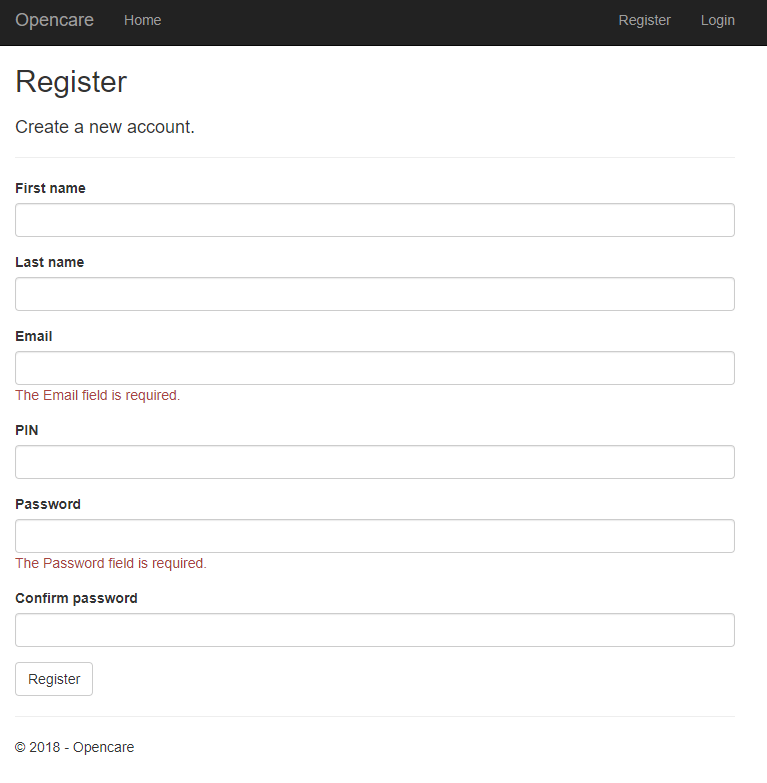
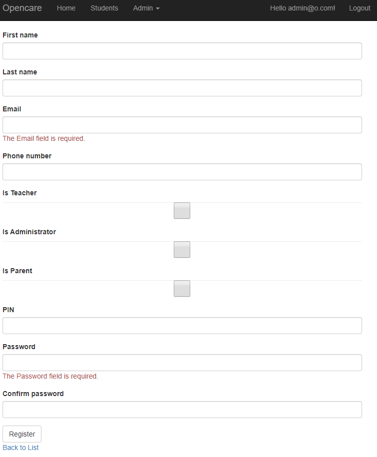
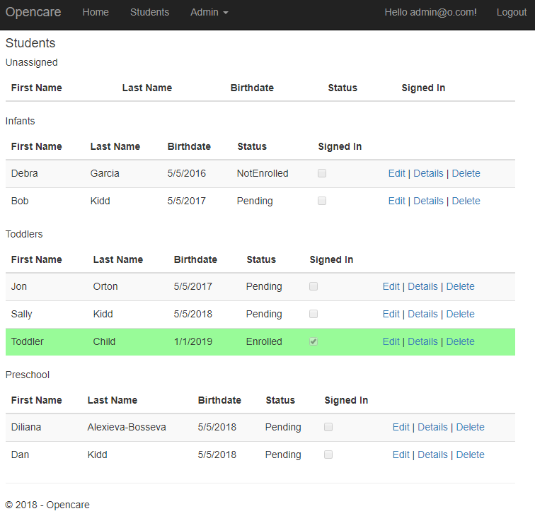
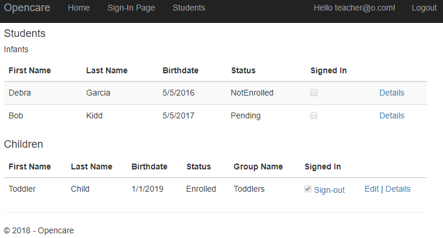
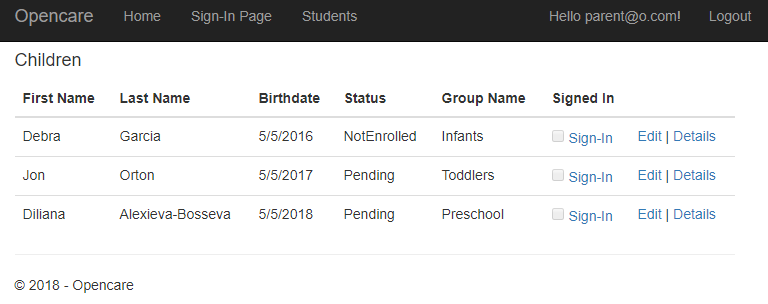
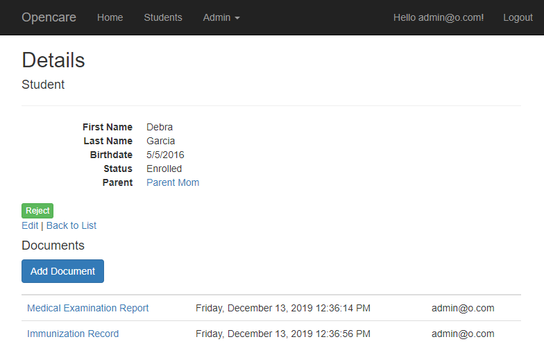
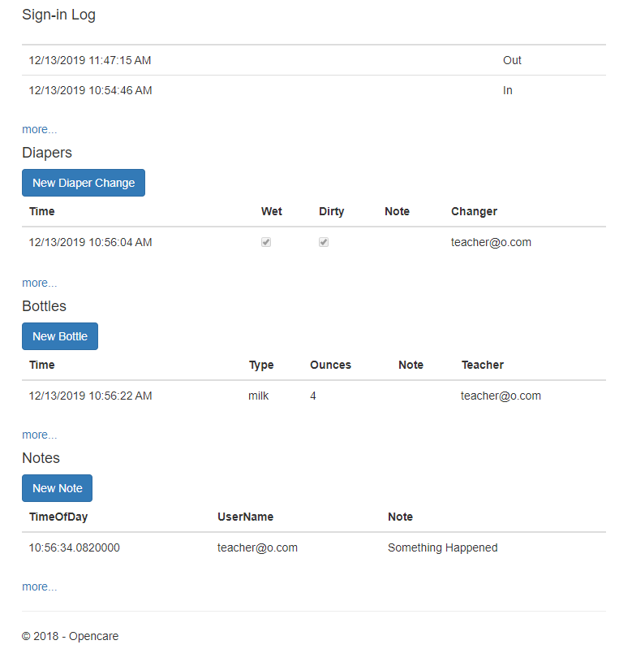
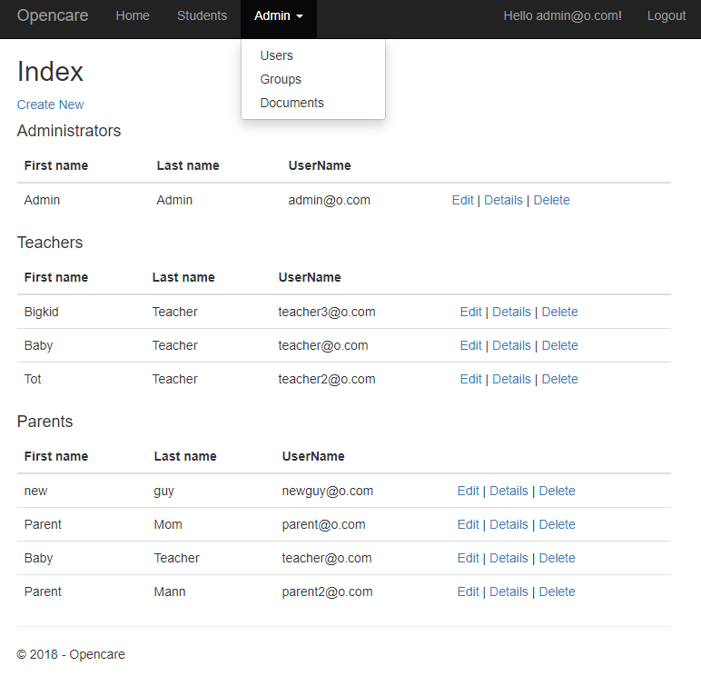
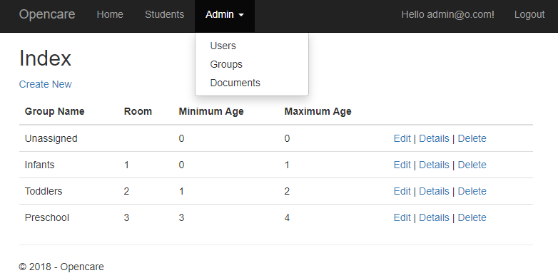
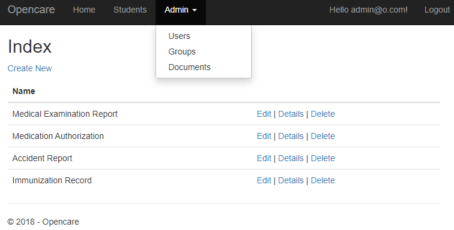

OpenCare is a free and Open Source daycare management system for managing day-to-day operations of a child care facility.
The application is written using ASP.NET Core 2.1 Razor Pages with Entity Framework Core Code First Migrations and SQL Server database.
User authentication, authorization, and roles are managed using ASP.NET Core Identity.
The source code is publicly available at:
This application uses 3 user roles:
-
Parent
- Teacher
-
Administrator
Parent is the most restricted role.
When parents sign in, they are brought to the student list page where they see a
list of all of their children currently registered. Parents can sign their children
in for the day, edit their personal information, or view their detail page.
Each child is a assigned to one parent account. A child has an enrollment status of Enrolled,
Not Enrolled, or Pending. This status is set by an Administrator. An administrator may also assign
a child to a group.
When teachers log in they are taken to the Student list page similarly to parents. However,
they will see a list of students assigned to the group that they teach and only have access
to view the enrollment status and sign-in status as well as access to the detail page.
If a teacher is also a parent, they will see a second list similar to when parents log in.
They have all of the same access to their children that parents do.
Administrators have the highest level of access. An administrator may also
be a teacher and/or a parent.
In addition to having all of the access of parents and teachers, administrators also have
access to the Admin menu where they can add new users and assign their role. Additionally
Administrators can manage groups and assign teachers and students to groups.
New Users can be registered two ways:
By filling out the registration page:

Or by an administrator:

User who self register will be defaulted to the Parent role. Users registered by an Admin
may be assigned to any role.
Administarators can see all registered students. They may edit their
information, view the detail page, or delete students.

Teachers see a list of all students enrolled in their group. If the teacher
is also a parent they will see a second list of their children.

Parents see only a list of their children.

The Student Detail page displays information about the student including:
- Personal Information
- Documents, such as medical records and accident reports.
- Daily information
Document files can uploaded, stored in the database, and downloaded by selecting the link.
The daily information includes Sign-ins, Diaper Changes, Bottles, and notes.
Only information for the current day is displayed, but clicking more allows the
user to view all past records.


Administrators may accept or reject a students enrollment from this page.
Documents, Diaper changes, Bottles, and Notes may be added by
Administrators, Teachers, or Parents. This allows parents to view what has
occured while the child is at school, but also gives them the opportunity
to give teachers information about their child's activities outside of school.
The Admin menu is only visible and accessible to administrators.
The Users list page displays all registered users. The administrator can register
new users or edit, view, and delete existing users. From the detail page, the
administator can see a list of a parent's children and a teacher's students.
When a parent is deleted, all children are also deleted.

The Group list page allows administrators to add, update, and delete groups.
They can also view a group and assign a teacher to that group.

The Document list page allows the administrator to add, update, and delete
document types.
